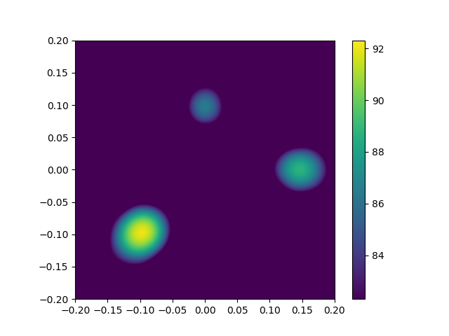
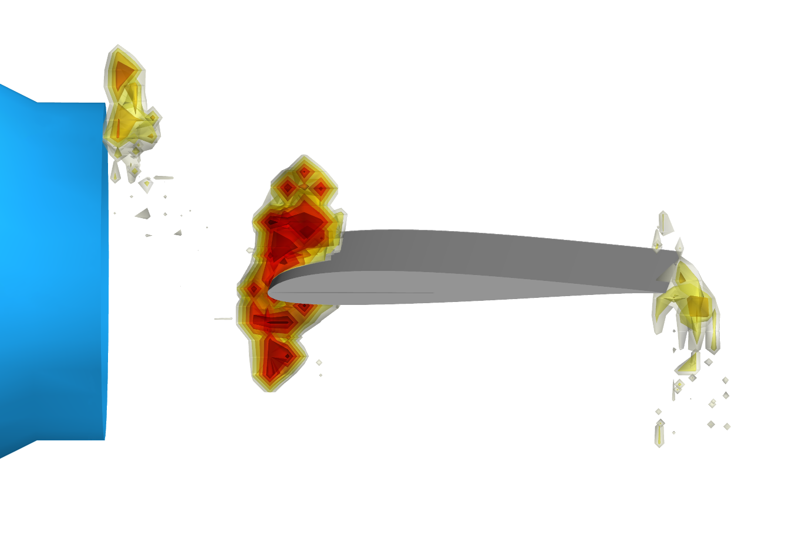
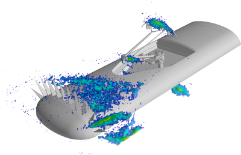

Acoular – Acoustic testing and source mapping software¶
Acoular is a framework for acoustic beamforming that is written in the Python programming language. It is aimed at applications in acoustic testing. Multichannel data recorded by a microphone array can be processed and analyzed in order to generate mappings of sound source distributions. The maps (acoustic photographs) can then be used to locate sources of interest and to characterize them using their spectra.
  {kind=link}
{kind=link}
{kind=link}
A few highlights of the framework:
covers several beamforming algorithms
different advanced deconvolution algorithms
both time-domain and frequency-domain operation included
3D mapping possible
application for stationary and for moving targets
supports both scripting and graphical user interface
efficient: intelligent caching, parallel computing with Numba
easily extendible and well documented
If you discover problems with the Acoular software, please report them using the issue tracker on GitHub. Please use the Acoular discussions forum for practical questions, discussions, and demos.
Our blog has detailed tutorials about how to set up and run an analysis and how to provide input data.
Contents:
Description of the different download and installation options to get Acoular running on your system. |
|
The basics for using Acoular, explained with a simple example. |
|
Example scripts covering different use cases. |
|
Release notes for the current version of Acoular. |
|
Information on how to contribute to the development of Acoular. |
|
All modules, classes and methods featured in Acoular are described in detail here. They can easily be browsed through an inheritance tree and cross links. |
|
In here some of the publications used for this program package are listed. Further reading to fully understand how the algorithms work is recommended. |